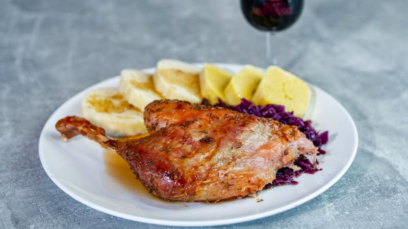

O receptu
Svatomartinská husa je tradiční české jídlo, které se připravuje hlavně na svátek svatého Martina. Podává se s červeným zelím a houskovým knedlíkem.
Ingredience
- 1 husa (asi 4 kg)
- 2 lžičky soli
- 1 lžička kmínu
- 2 jablka
- 2 cibule
- Trochu vody
Postup přípravy
- Husu očistíme a osušíme.
- Osolíme ji a posypeme kmínem.
- Do husy vložíme jablka a cibuli.
- Vložíme ji do pekáče a přidáme trochu vody.
- Pečeme přikrytou při 120 °C asi 4 hodiny.
- Odkryjeme a dopečeme při 180 °C dozlatova.
- Podáváme s červeným zelím a knedlíkem.
Dobrou chuť!
Užijte si tradiční svatomartinskou hostinu!